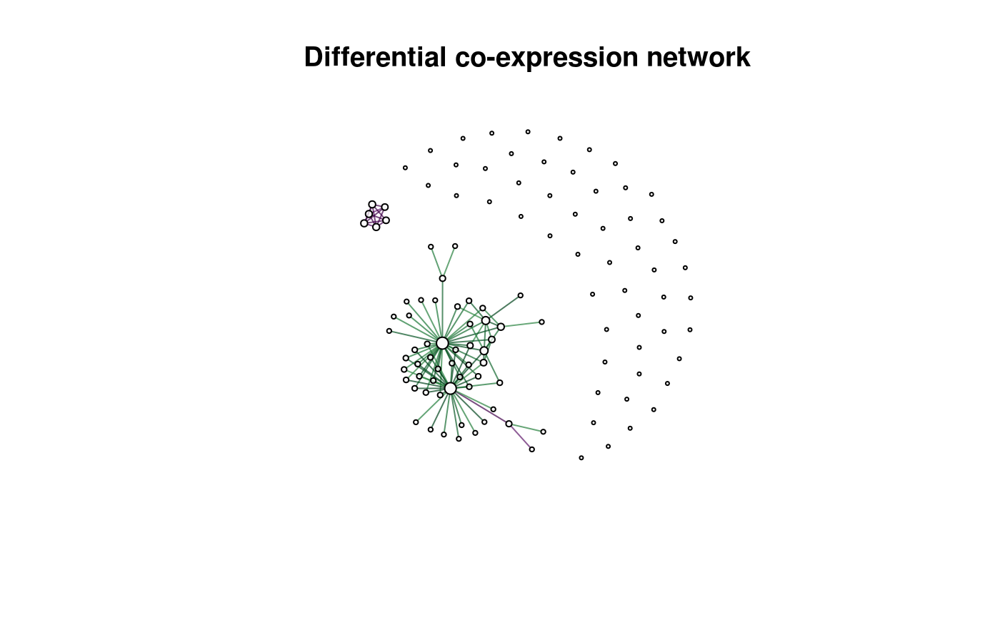

Methods and an evaluation framework for the inference of differential co-expression/association networks.
Installation
You can install dcanr from github with:
# install.packages("devtools")
devtools::install_github("DavisLaboratory/dcanr")Example
This example shows how a differential network can be derived. Simulated data within the package is used.
library(dcanr)
#load simulated data
data(sim102)
#get expression data and conditions for 'UME6' knock-down
simdata <- getSimData(sim102, cond.name = 'UME6', full = FALSE)
emat <- simdata$emat
ume6_kd <- simdata$condition
#apply the z-score method with Spearman correlations
z_scores <- dcScore(emat, ume6_kd, cor.method = 'spearman')
#perform a statistical test: the z-test is selected automatically
raw_p <- dcTest(z_scores, emat, ume6_kd)
#adjust p-values (raw p-values from dcTest should NOT be modified)
adj_p <- dcAdjust(raw_p, f = p.adjust, method = 'fdr')
#get the differential network
dcnet <- dcNetwork(z_scores, adj_p)
#> Warning in dcNetwork(z_scores, adj_p): default thresholds being selected
plot(dcnet, vertex.label = '', main = 'Differential co-expression network')
Edges in the differential network are coloured based on the score (negative to positive represented from purple to green respectively).